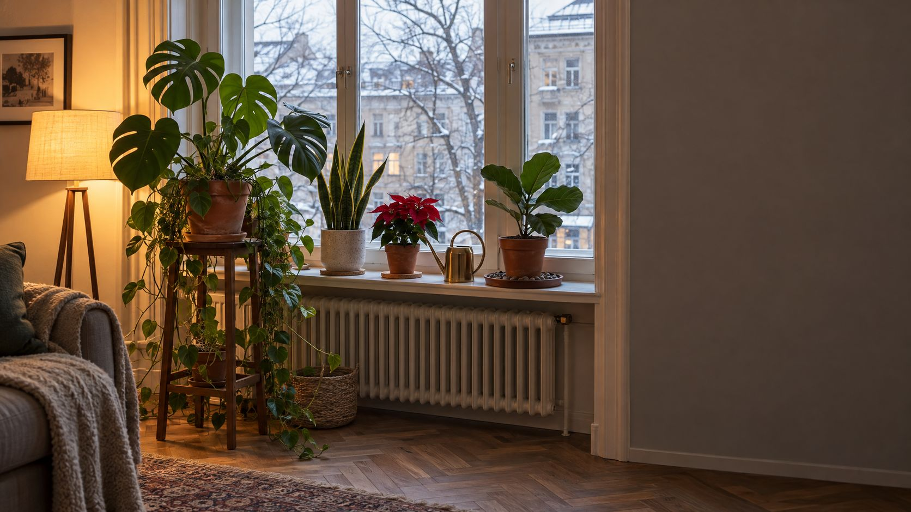
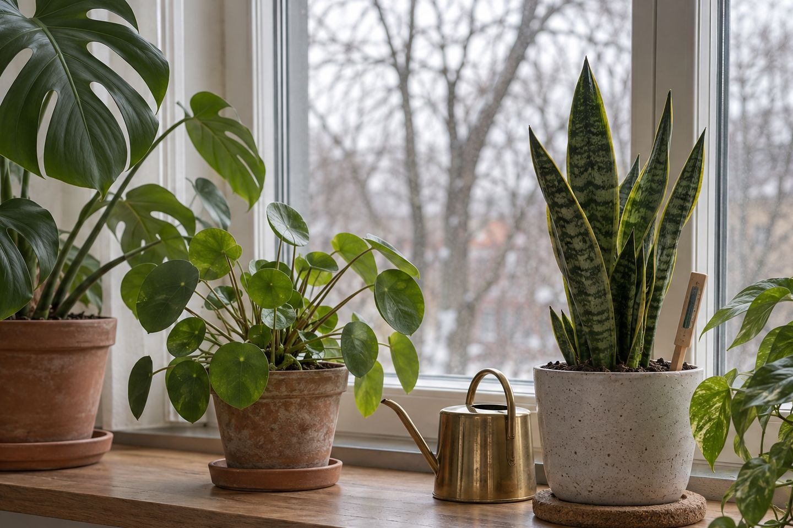

Zimmerpflanzen im Winter
Wenig Licht, trockene Heizungsluft, kalte Scheiben: Der Winter ist für Pflanzen die schwerste Zeit. Mit ein paar Handgriffen kommen sie gut durch bis zum Frühling.
Im Winter bekommen Zimmerpflanzen drinnen oft nur rund 1.000 Lux statt bis zu 100.000 Lux draußen im Sommer, deshalb gehören sie nah ans Fenster. Gegossen wird erst, wenn die Erde trocken ist, gedüngt wird bis etwa März nicht. Die meisten Pflanzen mögen ab etwa 16 °C, aber keine kalte Fensterbank und keine heiße Heizungsluft.
Was sich im Winter ändert.
Weniger Licht heißt: Die Pflanze wächst langsamer und braucht weniger Wasser.
Der Gieß-Check.
Wähle Pflanze und Platz. Du bekommst einen Richtwert. Am Ende entscheidet immer die Fingerprobe.
Fingerprobe: Steck einen Finger etwa zwei Zentimeter tief in die Erde. Ist sie dort noch feucht, warte. Wasser im Untersetzer nach einer Viertelstunde weggießen.

In sechs Schritten durch den Winter.
Ans Licht rücken
Stell die Pflanzen in den ersten Meter vor dem Fenster. Ost- und Westfenster sind im Winter oft ideal. Lass die Vorhänge tagsüber offen und wisch staubige Blätter mit einem feuchten Tuch ab.
Weniger gießen
Die meisten Pflanzen wachsen jetzt kaum. Gieß erst, wenn die Erde angetrocknet ist, mit zimmerwarmem, möglichst kalkarmem Wasser. Staunässe ist im Winter der häufigste Grund, warum Pflanzen eingehen.
Düngen pausieren
Ohne Wachstum braucht die Pflanze keinen Dünger. Fang im März wieder an, wenn die Tage länger werden.
Wurzeln warm halten
Eine kalte Steinfensterbank kühlt die Wurzeln aus. Kork, Holz oder ein Pflanzenroller dazwischen helfen. Blätter dürfen die Scheibe nicht berühren.
Luft feuchter machen
Stell Töpfe auf eine Schale mit Kieseln oder Blähton und etwas Wasser, ohne dass der Topf im Wasser steht. Pflanzen in Gruppen halten die Feuchte besser.
Blätter kontrollieren
Trockene Luft lockt Spinnmilben, Schild- und Wollläuse. Schau einmal pro Woche unter die Blätter und stell befallene Pflanzen sofort zur Seite.
Gegen Heizungsluft und Kälte.
- Braune Spitzen, eingerollte Blätter: Zeichen für zu trockene Luft. Kurz helfen Sprühen mit weichem, nicht kaltem Wasser. Pflanzen mit behaarten Blättern wie Usambaraveilchen und Begonien aber nicht besprühen.
- Lange, hellgrüne Triebe: Die Pflanze sucht Licht. Rück sie näher ans Fenster oder hilf mit einer Pflanzenlampe nach.
- Lüften ohne Kälteschock: Fenster, die du zum Lüften öffnest, bleiben im Winter besser frei. Eiskalte Zugluft schadet empfindlichen Pflanzen wie dem Weihnachtsstern schnell.
- Kühler ist oft besser: Ein kühler, heller Raum ist im Winter besser als ein Platz neben der Heizung. Azalee, Kamelie und Alpenveilchen mögen 12 bis 16 °C.
- Pflanzenlampe richtig nutzen: Hängt sie über der Pflanze und läuft 8 bis 10 Stunden am Tag, gleicht sie dunkle Plätze aus. Eine Zeitschaltuhr erledigt das von selbst. Wie viel Licht ein Raum sonst braucht, zeigt der Lumen-Rechner.
Häufige Fehler.
- Gießen nach Kalender wie im Sommer: Zu viel Wasser bei wenig Licht lässt die Wurzeln faulen. Lieber einmal zu wenig als zu viel.
- Wasser im Übertopf: Was sich unten sammelt, bleibt im Winter lange stehen. Immer ausgießen.
- Umtopfen im Winter: Die Pflanze ruht und wurzelt kaum neu. Umtopfen besser im Frühjahr.
- Trauermücken ignorieren: Die kleinen Fliegen lieben dauerfeuchte Erde. Lass die Oberfläche abtrocknen, gieß von unten oder streu etwa 1 cm Sand auf die Erde.
Pflanzen machen einen Raum sofort wohnlicher. Wie du sie mit Licht und Textilien kombinierst, steht unter Gemütlich im Winter. Viele Pflanzen gehören auch zum Boho-Stil.
Checkliste.
Hak ab, was erledigt ist. Der Stand bleibt nur in deinem Browser.
Für Pflanzen im Winter.
Ideen zum Stöbern. Die Links führen zu einer Suche bei AmazonAnzeige
Häufige Fragen.
Wie oft gießt man Zimmerpflanzen im Winter?
Seltener als im Sommer, bei vielen Grünpflanzen etwa einmal pro Woche, bei Kakteen eher alle drei Wochen. Gieß nur, wenn die Erde angetrocknet ist. Pflanzen über der Heizung brauchen öfter Wasser, Winterblüher wie Weihnachtsstern und Alpenveilchen ebenfalls.
Soll man Zimmerpflanzen im Winter düngen?
Meist nicht. Die Pflanzen ruhen und brauchen kaum Nährstoffe. Ab März, wenn sie wieder wachsen, kannst du wieder düngen.
Wie schütze ich Pflanzen vor Heizungsluft?
Stell sie nicht direkt über die Heizung, gruppiere sie und stell sie auf eine Schale mit feuchtem Blähton oder Kieseln. Sprühen hilft nur kurz.
Braucht meine Pflanze im Winter eine Pflanzenlampe?
Steht sie im ersten Meter vor einem hellen Fenster, meist nicht. Weiter im Raum oder an einem Nordfenster hilft eine Pflanzenlampe, die 8 bis 10 Stunden am Tag über der Pflanze leuchtet.
Warum bekommt meine Pflanze im Winter braune Blattspitzen?
Meist ist die Luft zu trocken. Unter etwa 50 Prozent Luftfeuchte zeigen viele Pflanzen braune Spitzen oder eingerollte Blätter.
Quellen.
Alle 5 Quellen anzeigen
- Stiftung Warentest: Zimmerpflanzen im Winter, harte Zeit für Zarte (geändert 11.08.2021) test.de
- Öko-Test: Zimmerpflanzen pflegen im Winter, Fehler, die Sie vermeiden sollten oekotest.de
- Natur im Garten: Gartentipp Zimmerpflanzen im Winter pflegen (PDF) verband-wohneigentum.de
- inFranken: Lichtmangel und Heizungsluft, Pflegetipps für Zimmerpflanzen (15.10.2020) infranken.de
- leinetal24: Pflanzlampe im Winter, brauchen Zimmerpflanzen das wirklich? (13.12.2024) leinetal24.de
Geprüft am 11.11.2026.